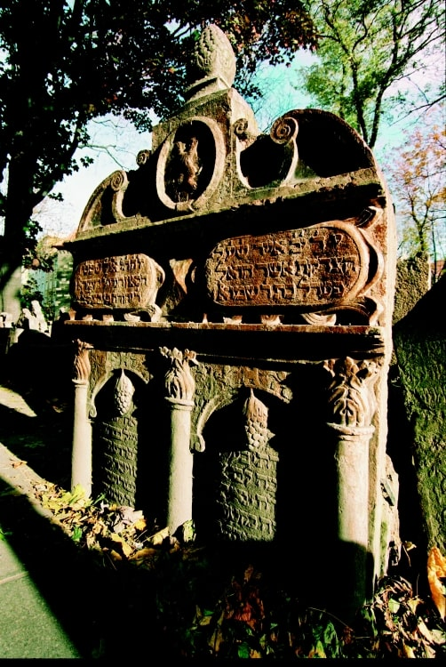
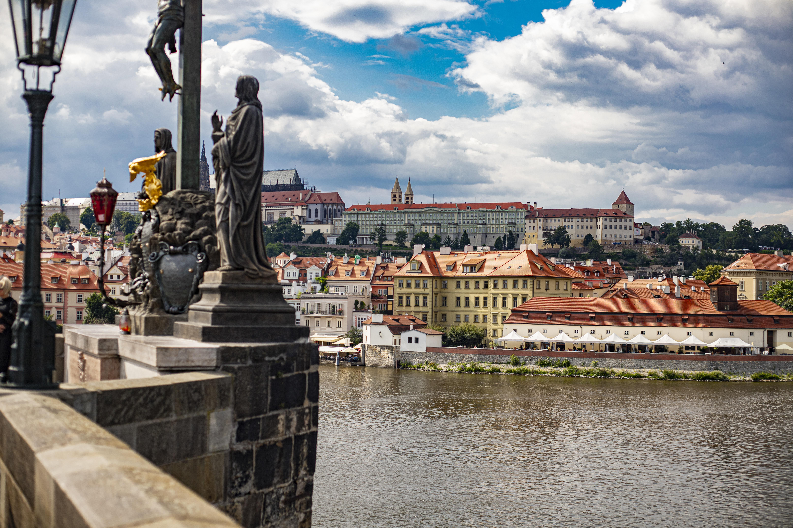

Reiseführer
Die beste Zeit, um Prag zu besuchen
Jede Jahreszeit erzählt eine andere Geschichte. Hier ist, wann die Stadt sich Ihnen am ehrlichsten zeigt — und warum der November mein Geheimtipp ist.

Versteckte Höfe der Altstadt
Sieben Innenhöfe, die kein Reiseführer kennt — und wie Sie hineinkommen.

Auf Kafkas Spuren
Ein Spaziergang durch das deutsche Prag, von der Geburtsstätte bis zum Schloss.

Prag nach Einbruch der Dunkelheit
Warum die Stadt nachts am schönsten ist — und am wenigsten überlaufen.

Das Erbe des Josefov
Sechs Synagogen, ein alter Friedhof und tausend Jahre Geschichte.

Prag vom Wasser aus
Die Moldau, ihre Inseln und der beste Blick auf die Karlsbrücke.

Die Statuen der Karlsbrücke
Dreißig Heilige, eine Legende und worauf man wirklich achten sollte.
Bleiben Sie in Verbindung